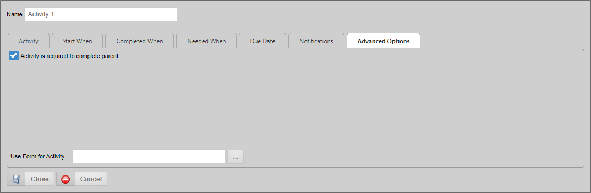

The notify task allows you to notify users or groups during a process. Most of the Notify Task options are configured via the common configuration options for an activity, except for the options in the Advanced Options tab.

There are two advanced options for Notification activities.
This option defaults to true, so that the Parent activity, if any, cannot be completed until this activity is complete. This is, by far, the most common relationship between parent/child activities.
This option enables you to specify a form instance for a particular notify step/activity. This feature is useful when configuring email templates to include information from a form instance other than the default form for that process.